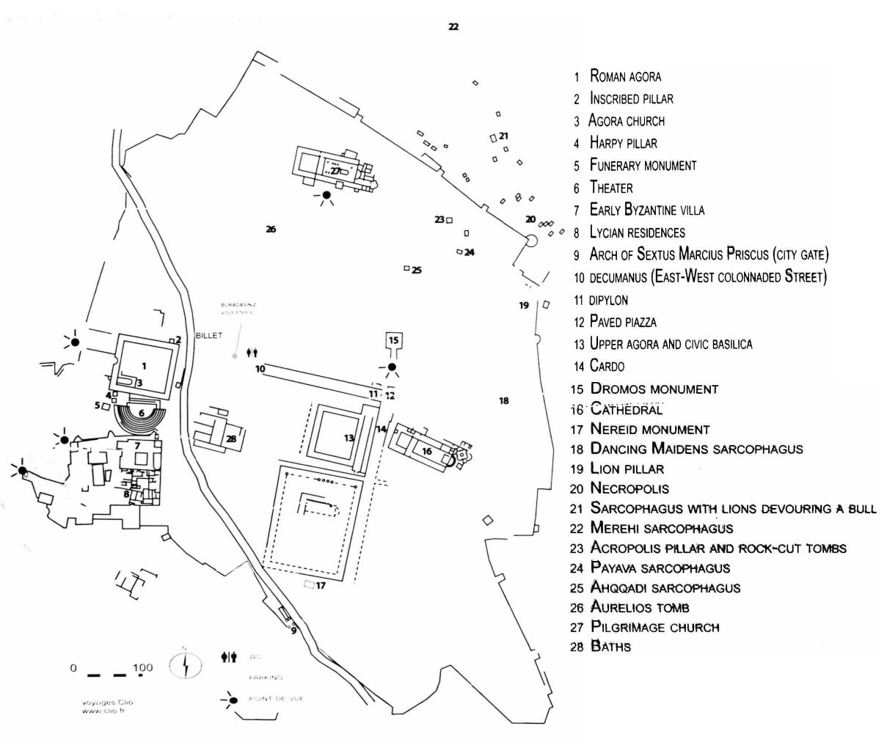

ⓘ
ⓘJanto fue la ciudad más importante de Licia y durante mucho tiempo su centro administrativo. Situada en una ladera sobre el valle del Eşen, se recuerda por su pueblo amante de la libertad: las fuentes antiguas cuentan que los xantios quemaron dos veces su ciudad antes que rendirse. Se ven tumbas de pilar exclusivamente licias, entre ellas el Monumento de las Harpías y el pilar inscrito con el texto licio más largo que se conoce. Algunos monumentos, como el de las Nereidas, se llevaron al extranjero en el siglo XIX. Patrimonio Mundial de la UNESCO junto con el Letoon desde 1988.
⏳ Viaje en el tiempo
| Entonces | Hoy |
|---|---|
| La ciudad más importante de Licia y durante mucho tiempo su sede de gobierno | La capital de una región |
| Dos veces sus habitantes quemaron su propia ciudad antes que rendirse | Una comunidad aferrada a su independencia |
| Tumbas monumentales sobre altos pilares de piedra | Monumentos que dibujan el perfil de la ciudad |
| Pilar inscrito: la inscripción licia más larga | Un archivo de piedra con el texto más largo de una lengua |
| El Monumento de las Nereidas fue llevado al extranjero en el siglo XIX | Un monumento expuesto hoy en el museo de otro país |
| En la lista de la UNESCO con Letoon desde 1988 | Un lugar considerado patrimonio común del mundo |
🎧 Un día en Janto
Es el año 380 a. C. Sube desde el valle del Eşen hacia la ciudad. En la ladera, tumbas colocadas sobre altos pilares de piedra se elevan hacia el cielo.
Se detiene ante el pilar inscrito junto al ágora. Sus cuatro caras están cubiertas de líneas en licio que hablan de las guerras y los gobernantes de la ciudad.
Por la tarde va a ver el nuevo Monumento de las Nereidas: un pequeño templo sobre un alto podio, con estatuas de ninfas marinas de ropas agitadas por el viento entre sus columnas.
Hoy el pilar inscrito sigue en su sitio. El Monumento de las Nereidas, en cambio, se desmontó en el siglo XIX y se envió en barco a Londres; en el lugar solo queda su base.
Las cifras son estimaciones; las fuentes dan valores distintos. El dibujo es ilustrativo, no a escala.
Plano del yacimiento

Plano: Rjdeadly · CC BY-SA 4.0 · Wikimedia Commons
Preguntas frecuentes
¿Dónde está Yacimiento de Janto?
Yacimiento de Janto se encuentra en Kaş, Antalya (Mediterráneo). Use el mapa o el botón de cómo llegar de esta página.
¿Cuánto tiempo se necesita para visitar Yacimiento de Janto?
Duración media de la visita: 2–4 horas.
¿Es válido el Museum Pass en Yacimiento de Janto?
Suele ser válida en los museos y yacimientos del Ministerio.
¿De qué época es Yacimiento de Janto?
Yacimiento de Janto data del periodo: Licio.
¿Qué más se puede ver cerca de Yacimiento de Janto?
Lugares culturales más cercanos: Yacimiento del Letoon (Fethiye) (~4 km), Pydnai (~8 km), Yacimiento de Patara (~10 km).
¿Hay audioguía para Yacimiento de Janto?
Sí. Con el botón Escuchar de esta página puede oír la presentación en 7 idiomas.
♿ Accesibilidad
Todavía no hay información de accesibilidad verificada para este lugar. La recopilamos de visitantes y museos y la publicamos aquí tras comprobarla.
En los museos y yacimientos del Ministerio de Cultura y Turismo, las personas con discapacidad y un acompañante entran gratis presentando un documento acreditativo. Confirme las condiciones vigentes antes de ir. Guía de accesibilidad →
♿ Enviar información de accesibilidad
💬 Notas y preguntas de visitantes
¿Ha estado aquí? Deje un consejo para otros visitantes o haga una pregunta. Las notas se publican tras la revisión de nuestro equipo.
✍️ Escribir una nota o pregunta
Guías relacionadas
Fotos
Alojamiento y restaurantes cercanos
¿Quiere que su negocio aparezca aquí? Publicidad